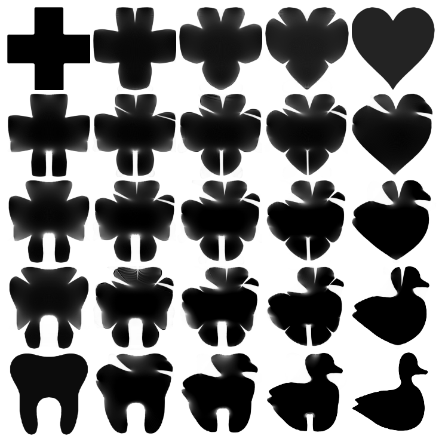

Shape Interpolation#
[1]:
from mmot import MMOTSolver
import numpy as np
import matplotlib.pyplot as plt
from scipy.ndimage import gaussian_filter
Define Marginals#
[2]:
def sharpen(img):
blurred = gaussian_filter(img, sigma=7)
blurred[blurred<0.5*np.max(blurred)] = 0.0
blurred[blurred>0] = 1.0
blurred /= np.sum(blurred)
return blurred
def pad(img,pad_size=4):
temp = np.ones((img.shape[0]+2*pad_size,img.shape[1]+2*pad_size))
temp[pad_size:-pad_size,pad_size:-pad_size] = img
return temp
def rescale(img):
output = np.zeros((2*img.shape[0],2*img.shape[1]))
output[0::2,0::2] = img
output[1::2,0::2] = img
output[1::2,1::2] = img
output[0::2,1::2] = img
return output
Load and rescale images#
[3]:
measures = [None]*4
measures[0] = sharpen(rescale(rescale(rescale(1 - pad(plt.imread('images/redcross.png')[:, :, 2])))))
measures[1] = sharpen(rescale(rescale(rescale(1 - pad(plt.imread('images/tooth.png')[:, :, 2])))))
measures[2] = sharpen(rescale(rescale(rescale(1 - pad(plt.imread('images/heart.png')[:, :, 2])))))
measures[3] = sharpen(rescale(rescale(rescale(1 - pad(plt.imread('images/duck.png')[:, :, 2])))))
for i in range(len(measures)):
measures[i] *= np.prod(measures[i].shape)/np.sum(measures[i])
print('Marginal size = ', measures[0].shape)
Marginal size = (1088, 1088)
Normalize images to create measures#
[4]:
# Grid of size n1 x n2
n1,n2 = measures[0].shape
x, y = np.meshgrid(np.linspace(0.5/n1,1-0.5/n1,n1), np.linspace(0.5/n2,1-0.5/n1,n2))
# Normalize all the measures
for i in range(len(measures)):
measures[i] *= n1*n2 / np.sum(measures[i])
Plot the measures#
[5]:
fig, ax = plt.subplots(1, len(measures), figsize=(12,4),sharey=True)
for i in range(len(measures)):
ax[i].imshow(measures[i], extent=(0,1,0,1), cmap='Greys')
ax[i].set_title("$\\mu_{{ {:0d} }}$".format(i))
Solve for Each Barycenter#
[6]:
def SolveForBary(bary_weights):
unroll_node = 1
bary_weights /= np.sum(bary_weights)
# Only keep the measures with positive weights
keep_inds = np.where(bary_weights>0)[0]
bary_weights = bary_weights[keep_inds]
if(len(keep_inds)==1):
return measures[keep_inds[0]]
keep_measures = [measures[i] for i in keep_inds]
# Construct the edge list for the barycenter problem
edge_list = []
for i in range(len(keep_inds)):
for j in range(i+1,len(keep_inds)):
edge_list.append([i,j])
# Set up the MMOT solver
prob = MMOTSolver(keep_measures, edge_list, x, y, unroll_node, bary_weights)
# Solve the MMOT problem
res = prob.Solve(max_its=1000, step_size=1.0, ftol_abs=1e-11, gtol_abs=1e-7, max_line_its=30)
# Use the result to compute the barycenter
return prob.Barycenter(res.dual_vars)
[7]:
fig=plt.figure(figsize=(8,8))
vmax = np.max(measures[0])
size=0.26
corner_pos = np.array([[0.0,1.0], [0.0,0.0], [1.0,1.0], [1.0,0.0]])
for i,m in enumerate(measures):
ax=fig.add_axes([corner_pos[i,0],corner_pos[i,1],size,size])
ax.imshow(measures[i],extent=(0,1,0,1),cmap='Greys',vmin=0, vmax=vmax)
ax.set_axis_off()
for w1 in np.linspace(0,1,5):
for w2 in np.linspace(0,1,5):
weights = [(1.0-w1)*w2, (1.0-w1)*(1.0-w2), w1*w2, w1*(1.0-w2)]
if(np.max(weights)<1.0-1e-12):
avg_pos = [w1,w2]
bary = SolveForBary(weights)
ax=fig.add_axes([avg_pos[0],avg_pos[1],size,size])
ax.imshow(bary,extent=(0,1,0,1),cmap='Greys',vmin=0, vmax=vmax)
ax.set_axis_off()
plt.savefig('ShapeInterpolation.pdf',bbox_inches='tight')
Iteration, StepSize, Cost, Error, Line Its
0, 0.1250, 1.1400e-03, 1.7696e-02, 3
10, 0.0967, 1.3100e-03, 3.7211e-06, 0
20, 0.0749, 1.3104e-03, 9.2093e-07, 0
30, 0.0580, 1.3105e-03, 3.2095e-07, 1
40, 0.0897, 1.3105e-03, 2.0714e-07, 0
50, 0.0347, 1.3106e-03, 1.5229e-07, 0
60, 0.0537, 1.3106e-03, 1.4505e-07, 0
64, 0.0279, 1.3106e-03, 1.3943e-07, 0
Terminating due to small change in objective.
Iteration, StepSize, Cost, Error, Line Its
0, 0.2500, 9.8191e-04, 1.7696e-02, 2
10, 0.0967, 1.7466e-03, 7.9338e-06, 0
20, 0.1498, 1.7472e-03, 8.9044e-07, 0
30, 0.0580, 1.7473e-03, 2.8863e-07, 1
40, 0.0449, 1.7474e-03, 1.8985e-07, 0
50, 0.0694, 1.7474e-03, 1.5930e-07, 0
60, 0.1075, 1.7474e-03, 1.3898e-07, 0
70, 0.0416, 1.7474e-03, 1.2226e-07, 0
80, 0.0161, 1.7474e-03, 1.0924e-07, 0
85, 0.0400, 1.7474e-03, 1.4200e-07, 0
Terminating due to small change in objective.
Iteration, StepSize, Cost, Error, Line Its
0, 0.1250, 1.1400e-03, 1.7696e-02, 3
10, 0.0967, 1.3100e-03, 3.7211e-06, 0
20, 0.0749, 1.3104e-03, 9.2093e-07, 0
30, 0.0580, 1.3105e-03, 3.2095e-07, 1
40, 0.0897, 1.3105e-03, 2.0714e-07, 0
50, 0.0347, 1.3106e-03, 1.5229e-07, 0
60, 0.0537, 1.3106e-03, 1.4505e-07, 0
64, 0.0279, 1.3106e-03, 1.3943e-07, 0
Terminating due to small change in objective.
Iteration, StepSize, Cost, Error, Line Its
0, 0.2500, 6.2705e-04, 5.5093e-02, 2
10, 0.0967, 3.9683e-03, 8.7343e-04, 1
20, 0.0749, 3.9880e-03, 2.0761e-06, 0
30, 0.0145, 3.9881e-03, 3.8814e-07, 2
40, 0.0897, 3.9881e-03, 1.8191e-07, 0
46, 0.0335, 3.9881e-03, 9.5371e-08, 0
Terminating due to small gradient norm.
Iteration, StepSize, Cost, Error, Line Its
0, 0.0156, 2.5822e-04, 1.7868e-01, 6
10, 0.0121, 2.9165e-03, 4.1007e-02, 0
20, 0.0094, 3.4388e-03, 6.4220e-03, 0
30, 0.0072, 3.5851e-03, 3.0067e-03, 0
40, 0.0056, 3.6357e-03, 1.1183e-03, 0
50, 0.0043, 3.6581e-03, 9.4142e-04, 0
60, 0.0067, 3.6685e-03, 4.7267e-04, 0
70, 0.0026, 3.6786e-03, 3.0971e-04, 0
80, 0.0020, 3.6838e-03, 2.6760e-04, 2
90, 0.0062, 3.6873e-03, 1.6299e-04, 0
100, 0.0048, 3.6904e-03, 1.2544e-04, 0
110, 0.0037, 3.6920e-03, 1.3406e-04, 0
120, 0.0014, 3.6939e-03, 1.1766e-04, 0
130, 0.0022, 3.6949e-03, 7.5349e-05, 2
140, 0.0069, 3.6960e-03, 4.4493e-05, 0
150, 0.0054, 3.6969e-03, 4.1271e-05, 0
160, 0.0041, 3.6973e-03, 3.1380e-05, 1
170, 0.0064, 3.6978e-03, 2.3150e-05, 0
180, 0.0050, 3.6982e-03, 1.9596e-05, 0
190, 0.0077, 3.6987e-03, 1.9571e-05, 0
200, 0.0059, 3.6990e-03, 1.8339e-05, 0
210, 0.0046, 3.6991e-03, 1.4002e-05, 0
220, 0.0036, 3.6994e-03, 1.3789e-05, 0
230, 0.0055, 3.6996e-03, 9.0947e-06, 0
240, 0.0043, 3.6997e-03, 1.0848e-05, 0
250, 0.0033, 3.6999e-03, 8.1440e-06, 0
260, 0.0051, 3.7000e-03, 6.6629e-06, 0
270, 0.0040, 3.7001e-03, 6.4757e-06, 0
280, 0.0061, 3.7002e-03, 5.1089e-06, 0
290, 0.0047, 3.7003e-03, 5.8674e-06, 0
300, 0.0073, 3.7003e-03, 5.5901e-06, 0
306, 0.0055, 3.7004e-03, 5.4259e-06, 0
Terminating due to small change in objective.
Iteration, StepSize, Cost, Error, Line Its
0, 0.0156, 5.0099e-04, 1.7868e-01, 6
10, 0.0121, 2.6301e-03, 2.1060e-02, 0
20, 0.0094, 2.9626e-03, 8.3690e-03, 1
30, 0.0145, 3.0736e-03, 1.8179e-03, 0
40, 0.0112, 3.1088e-03, 8.0682e-04, 0
50, 0.0087, 3.1227e-03, 3.6653e-04, 0
60, 0.0067, 3.1307e-03, 2.1885e-04, 1
70, 0.0052, 3.1357e-03, 1.2489e-04, 0
80, 0.0080, 3.1387e-03, 9.7183e-05, 0
90, 0.0125, 3.1413e-03, 7.0989e-05, 0
100, 0.0096, 3.1425e-03, 5.4229e-05, 0
110, 0.0037, 3.1435e-03, 4.0062e-05, 0
120, 0.0029, 3.1443e-03, 2.9014e-05, 0
130, 0.0022, 3.1449e-03, 2.7082e-05, 2
140, 0.0069, 3.1453e-03, 1.7331e-05, 0
150, 0.0054, 3.1458e-03, 1.8002e-05, 0
160, 0.0041, 3.1460e-03, 1.2886e-05, 0
170, 0.0032, 3.1463e-03, 1.0701e-05, 0
180, 0.0099, 3.1466e-03, 1.0101e-05, 0
190, 0.0038, 3.1468e-03, 9.1758e-06, 0
200, 0.0030, 3.1469e-03, 6.7685e-06, 0
210, 0.0046, 3.1471e-03, 6.4080e-06, 0
220, 0.0036, 3.1472e-03, 5.2185e-06, 0
230, 0.0028, 3.1473e-03, 5.3107e-06, 2
240, 0.0085, 3.1474e-03, 3.9405e-06, 0
250, 0.0066, 3.1475e-03, 4.7018e-06, 0
260, 0.0051, 3.1475e-03, 3.2400e-06, 1
270, 0.0079, 3.1476e-03, 2.7151e-06, 0
280, 0.0061, 3.1476e-03, 2.4766e-06, 0
290, 0.0047, 3.1477e-03, 2.5738e-06, 0
300, 0.0073, 3.1477e-03, 2.4539e-06, 0
310, 0.0057, 3.1478e-03, 2.2332e-06, 0
320, 0.0044, 3.1478e-03, 2.3692e-06, 1
330, 0.0068, 3.1478e-03, 1.8053e-06, 0
340, 0.0053, 3.1478e-03, 1.8518e-06, 0
350, 0.0082, 3.1479e-03, 1.6856e-06, 0
360, 0.0032, 3.1479e-03, 1.5324e-06, 0
370, 0.0049, 3.1479e-03, 1.7370e-06, 0
380, 0.0038, 3.1479e-03, 1.1313e-06, 0
390, 0.0029, 3.1479e-03, 1.1035e-06, 0
400, 0.0023, 3.1479e-03, 1.2876e-06, 1
410, 0.0035, 3.1479e-03, 1.2718e-06, 0
420, 0.0027, 3.1480e-03, 1.0674e-06, 0
430, 0.0021, 3.1480e-03, 1.4189e-06, 0
440, 0.0016, 3.1480e-03, 9.5727e-07, 0
450, 0.0013, 3.1480e-03, 9.7034e-07, 1
460, 0.0019, 3.1480e-03, 1.2745e-06, 0
470, 0.0015, 3.1480e-03, 1.1046e-06, 0
480, 0.0012, 3.1480e-03, 9.1530e-07, 1
490, 0.0018, 3.1480e-03, 8.9871e-07, 0
500, 0.0014, 3.1480e-03, 9.1937e-07, 0
510, 0.0011, 3.1480e-03, 1.0720e-06, 1
520, 0.0017, 3.1480e-03, 1.0543e-06, 0
530, 0.0013, 3.1480e-03, 8.9753e-07, 0
540, 0.0010, 3.1480e-03, 1.2404e-06, 0
550, 0.0008, 3.1480e-03, 8.5021e-07, 0
560, 0.0006, 3.1480e-03, 8.7667e-07, 1
570, 0.0009, 3.1480e-03, 1.1590e-06, 0
580, 0.0007, 3.1480e-03, 9.9525e-07, 0
590, 0.0006, 3.1480e-03, 8.4683e-07, 1
600, 0.0009, 3.1480e-03, 8.3234e-07, 0
610, 0.0007, 3.1480e-03, 8.6059e-07, 0
620, 0.0005, 3.1480e-03, 9.9578e-07, 1
630, 0.0008, 3.1480e-03, 9.7640e-07, 0
640, 0.0006, 3.1480e-03, 8.3952e-07, 0
650, 0.0005, 3.1480e-03, 1.1756e-06, 0
660, 0.0004, 3.1480e-03, 8.1135e-07, 0
670, 0.0003, 3.1480e-03, 8.4194e-07, 1
680, 0.0004, 3.1480e-03, 1.1139e-06, 0
690, 0.0003, 3.1480e-03, 9.5180e-07, 0
700, 0.0003, 3.1480e-03, 8.1894e-07, 1
710, 0.0004, 3.1480e-03, 8.0416e-07, 0
715, 0.0003, 3.1480e-03, 8.0131e-07, 0
Terminating due to small change in objective.
Iteration, StepSize, Cost, Error, Line Its
0, 0.0156, 1.1243e-04, 1.7868e-01, 6
10, 0.0060, 1.8906e-03, 1.4888e-02, 0
20, 0.0047, 2.1526e-03, 3.0602e-02, 1
30, 0.0036, 2.2483e-03, 1.9101e-03, 1
40, 0.0056, 2.2814e-03, 9.8518e-04, 0
50, 0.0043, 2.2973e-03, 6.3758e-04, 0
60, 0.0034, 2.3060e-03, 4.2602e-04, 1
70, 0.0052, 2.3115e-03, 2.2510e-04, 0
80, 0.0040, 2.3153e-03, 2.2429e-04, 0
90, 0.0031, 2.3179e-03, 1.4277e-04, 1
100, 0.0048, 2.3199e-03, 1.6540e-04, 0
110, 0.0037, 2.3212e-03, 1.9042e-04, 1
120, 0.0058, 2.3222e-03, 8.4632e-05, 0
130, 0.0045, 2.3231e-03, 7.7502e-05, 0
140, 0.0035, 2.3238e-03, 4.9921e-05, 0
150, 0.0027, 2.3244e-03, 4.4459e-05, 0
160, 0.0041, 2.3249e-03, 5.2185e-05, 0
170, 0.0032, 2.3254e-03, 4.6557e-05, 0
180, 0.0050, 2.3259e-03, 3.9304e-05, 0
190, 0.0038, 2.3262e-03, 2.4249e-05, 0
200, 0.0030, 2.3266e-03, 2.2490e-05, 0
210, 0.0023, 2.3268e-03, 2.2529e-05, 0
220, 0.0018, 2.3270e-03, 1.7428e-05, 0
230, 0.0028, 2.3272e-03, 1.5058e-05, 0
240, 0.0043, 2.3274e-03, 1.6927e-05, 0
250, 0.0033, 2.3276e-03, 1.3792e-05, 0
260, 0.0026, 2.3277e-03, 1.3123e-05, 0
270, 0.0020, 2.3279e-03, 1.1035e-05, 0
280, 0.0031, 2.3280e-03, 1.0908e-05, 0
290, 0.0024, 2.3281e-03, 1.5193e-05, 0
300, 0.0018, 2.3282e-03, 9.2106e-06, 1
310, 0.0028, 2.3283e-03, 1.0402e-05, 0
320, 0.0022, 2.3284e-03, 8.5524e-06, 0
330, 0.0034, 2.3285e-03, 6.6599e-06, 0
340, 0.0026, 2.3286e-03, 1.0008e-05, 0
350, 0.0020, 2.3286e-03, 6.1928e-06, 1
360, 0.0032, 2.3287e-03, 8.1982e-06, 0
370, 0.0024, 2.3287e-03, 8.3203e-06, 1
380, 0.0038, 2.3288e-03, 5.5783e-06, 0
390, 0.0029, 2.3288e-03, 5.7189e-06, 0
400, 0.0023, 2.3289e-03, 4.3926e-06, 0
410, 0.0035, 2.3289e-03, 6.7713e-06, 0
420, 0.0027, 2.3290e-03, 6.2027e-06, 1
430, 0.0042, 2.3290e-03, 4.3345e-06, 0
440, 0.0033, 2.3290e-03, 4.6344e-06, 0
450, 0.0025, 2.3291e-03, 3.9578e-06, 1
460, 0.0019, 2.3291e-03, 3.4444e-06, 0
470, 0.0030, 2.3291e-03, 2.7425e-06, 0
480, 0.0023, 2.3292e-03, 3.2137e-06, 0
490, 0.0036, 2.3292e-03, 3.3809e-06, 0
500, 0.0014, 2.3292e-03, 2.4268e-06, 1
510, 0.0043, 2.3292e-03, 2.5462e-06, 0
520, 0.0017, 2.3293e-03, 2.5109e-06, 0
530, 0.0026, 2.3293e-03, 2.6774e-06, 0
540, 0.0020, 2.3293e-03, 1.9454e-06, 0
550, 0.0016, 2.3293e-03, 2.0617e-06, 1
560, 0.0024, 2.3293e-03, 2.1860e-06, 0
570, 0.0019, 2.3294e-03, 2.0230e-06, 0
580, 0.0014, 2.3294e-03, 1.5929e-06, 1
590, 0.0022, 2.3294e-03, 1.7170e-06, 0
600, 0.0017, 2.3294e-03, 1.7236e-06, 1
602, 0.0025, 2.3294e-03, 1.9584e-06, 0
Terminating due to small change in objective.
Iteration, StepSize, Cost, Error, Line Its
0, 0.1250, 1.1355e-03, 1.6898e-02, 3
10, 0.0967, 1.2454e-03, 3.7822e-06, 0
20, 0.1498, 1.2457e-03, 2.2297e-07, 0
26, 0.1118, 1.2458e-03, 9.9151e-08, 0
Terminating due to small gradient norm.
Iteration, StepSize, Cost, Error, Line Its
0, 0.2500, 3.5507e-03, 5.5093e-02, 2
10, 0.0967, 5.3153e-03, 3.5295e-05, 0
20, 0.0749, 5.3173e-03, 4.4413e-07, 0
30, 0.0580, 5.3174e-03, 9.1756e-07, 0
40, 0.0224, 5.3174e-03, 6.4343e-07, 2
50, 0.1389, 5.3175e-03, 2.2291e-07, 0
55, 0.0216, 5.3175e-03, 9.2776e-08, 0
Terminating due to small gradient norm.
Iteration, StepSize, Cost, Error, Line Its
0, 0.0156, 5.7209e-04, 1.7868e-01, 6
10, 0.0121, 4.3208e-03, 1.4257e-02, 1
20, 0.0187, 4.7740e-03, 5.4168e-03, 0
30, 0.0145, 4.8868e-03, 1.4376e-03, 0
40, 0.0112, 4.9339e-03, 1.0383e-03, 0
50, 0.0087, 4.9494e-03, 4.9802e-04, 0
60, 0.0067, 4.9683e-03, 2.9846e-04, 1
70, 0.0104, 4.9767e-03, 1.1445e-04, 0
80, 0.0080, 4.9816e-03, 6.4148e-05, 0
90, 0.0062, 4.9844e-03, 5.2549e-05, 0
100, 0.0048, 4.9861e-03, 4.7439e-05, 0
110, 0.0075, 4.9869e-03, 3.4502e-05, 1
120, 0.0116, 4.9884e-03, 1.5468e-05, 0
130, 0.0089, 4.9890e-03, 1.4150e-05, 1
140, 0.0138, 4.9895e-03, 1.2876e-05, 0
150, 0.0054, 4.9898e-03, 8.1593e-06, 0
160, 0.0041, 4.9899e-03, 7.7732e-06, 2
170, 0.0128, 4.9901e-03, 4.2364e-06, 0
180, 0.0099, 4.9902e-03, 3.1140e-06, 0
190, 0.0077, 4.9903e-03, 2.9573e-06, 0
200, 0.0059, 4.9904e-03, 3.0583e-06, 0
210, 0.0046, 4.9905e-03, 1.9592e-06, 1
220, 0.0071, 4.9905e-03, 1.9819e-06, 0
230, 0.0055, 4.9906e-03, 1.5781e-06, 0
240, 0.0043, 4.9906e-03, 1.4300e-06, 0
250, 0.0066, 4.9906e-03, 1.6921e-06, 0
260, 0.0051, 4.9906e-03, 1.4399e-06, 0
270, 0.0040, 4.9906e-03, 1.6184e-06, 1
280, 0.0061, 4.9907e-03, 1.1893e-06, 0
290, 0.0047, 4.9907e-03, 1.0360e-06, 0
300, 0.0037, 4.9907e-03, 1.2851e-06, 0
310, 0.0028, 4.9907e-03, 1.1032e-06, 0
320, 0.0022, 4.9907e-03, 9.7042e-07, 1
330, 0.0034, 4.9907e-03, 9.6704e-07, 0
340, 0.0026, 4.9907e-03, 9.3963e-07, 0
350, 0.0020, 4.9907e-03, 8.3827e-07, 1
360, 0.0032, 4.9907e-03, 9.5137e-07, 0
370, 0.0024, 4.9907e-03, 9.0703e-07, 0
380, 0.0019, 4.9907e-03, 1.1233e-06, 1
390, 0.0029, 4.9908e-03, 8.6880e-07, 0
400, 0.0023, 4.9908e-03, 7.8012e-07, 0
410, 0.0018, 4.9908e-03, 1.0173e-06, 0
420, 0.0014, 4.9908e-03, 8.3835e-07, 0
430, 0.0011, 4.9908e-03, 8.0395e-07, 1
440, 0.0016, 4.9908e-03, 8.0897e-07, 0
443, 0.0014, 4.9908e-03, 9.8490e-07, 0
Terminating due to small change in objective.
Iteration, StepSize, Cost, Error, Line Its
0, 0.0312, 1.5451e-04, 1.7868e-01, 5
10, 0.0242, 4.1828e-03, 2.1165e-03, 0
20, 0.0187, 4.2572e-03, 2.0548e-04, 0
30, 0.0290, 4.2684e-03, 1.2155e-04, 0
40, 0.0112, 4.2703e-03, 2.5577e-05, 0
50, 0.0087, 4.2713e-03, 1.5692e-05, 1
60, 0.0134, 4.2717e-03, 9.0377e-06, 1
70, 0.0208, 4.2721e-03, 3.7777e-06, 0
80, 0.0080, 4.2723e-03, 2.1580e-06, 0
90, 0.0125, 4.2723e-03, 1.9848e-06, 0
100, 0.0096, 4.2724e-03, 1.7862e-06, 1
110, 0.0149, 4.2724e-03, 1.2657e-06, 0
120, 0.0058, 4.2724e-03, 9.9072e-07, 0
130, 0.0045, 4.2725e-03, 9.9110e-07, 0
140, 0.0017, 4.2725e-03, 9.3887e-07, 0
141, 0.0021, 4.2725e-03, 8.6516e-07, 0
Terminating due to small change in objective.
Iteration, StepSize, Cost, Error, Line Its
0, 0.0156, 4.2494e-04, 1.7868e-01, 6
10, 0.0060, 2.9487e-03, 3.0168e-02, 2
20, 0.0094, 3.1005e-03, 1.8118e-03, 0
30, 0.0072, 3.1280e-03, 4.6759e-04, 0
40, 0.0056, 3.1393e-03, 6.7251e-04, 1
50, 0.0043, 3.1463e-03, 1.7460e-04, 0
60, 0.0034, 3.1496e-03, 1.5701e-04, 1
70, 0.0052, 3.1519e-03, 1.2018e-04, 0
80, 0.0040, 3.1536e-03, 1.1865e-04, 0
90, 0.0031, 3.1549e-03, 5.6408e-05, 1
100, 0.0048, 3.1562e-03, 5.8241e-05, 0
110, 0.0037, 3.1571e-03, 3.4321e-05, 0
120, 0.0029, 3.1578e-03, 3.3265e-05, 0
130, 0.0022, 3.1584e-03, 6.0043e-05, 1
140, 0.0035, 3.1588e-03, 1.9243e-05, 1
150, 0.0054, 3.1592e-03, 2.3891e-05, 0
160, 0.0041, 3.1595e-03, 3.3088e-05, 1
170, 0.0064, 3.1598e-03, 1.8904e-05, 0
180, 0.0050, 3.1600e-03, 1.7286e-05, 0
190, 0.0038, 3.1603e-03, 1.0521e-05, 1
200, 0.0059, 3.1605e-03, 2.2539e-05, 0
210, 0.0046, 3.1607e-03, 1.1145e-05, 0
220, 0.0036, 3.1609e-03, 1.4545e-05, 1
230, 0.0055, 3.1610e-03, 9.8658e-06, 0
240, 0.0043, 3.1611e-03, 6.6244e-06, 0
250, 0.0033, 3.1612e-03, 6.8618e-06, 0
260, 0.0051, 3.1613e-03, 7.2721e-06, 0
270, 0.0040, 3.1614e-03, 1.0824e-05, 1
280, 0.0061, 3.1615e-03, 6.5104e-06, 0
290, 0.0047, 3.1616e-03, 4.0026e-06, 0
300, 0.0037, 3.1617e-03, 4.0165e-06, 0
310, 0.0028, 3.1617e-03, 3.6853e-06, 0
320, 0.0044, 3.1618e-03, 4.1822e-06, 0
330, 0.0034, 3.1618e-03, 3.6411e-06, 0
340, 0.0053, 3.1619e-03, 2.9885e-06, 0
350, 0.0041, 3.1619e-03, 2.7033e-06, 0
360, 0.0032, 3.1620e-03, 2.7744e-06, 0
370, 0.0024, 3.1620e-03, 2.5045e-06, 0
380, 0.0038, 3.1620e-03, 3.4981e-06, 0
386, 0.0056, 3.1620e-03, 3.0433e-06, 0
Terminating due to small change in objective.
Iteration, StepSize, Cost, Error, Line Its
0, 0.2500, 8.3392e-04, 1.6898e-02, 2
10, 0.3870, 1.6605e-03, 1.7111e-06, 0
20, 0.1498, 1.6609e-03, 2.2279e-07, 0
27, 0.1342, 1.6610e-03, 9.9737e-08, 1
Terminating due to small gradient norm.
Iteration, StepSize, Cost, Error, Line Its
0, 0.2500, 6.2705e-04, 5.5093e-02, 2
10, 0.0967, 3.9683e-03, 8.7343e-04, 1
20, 0.0749, 3.9880e-03, 2.0761e-06, 0
30, 0.0145, 3.9881e-03, 3.8814e-07, 2
40, 0.0897, 3.9881e-03, 1.8191e-07, 0
46, 0.0335, 3.9881e-03, 9.5371e-08, 0
Terminating due to small gradient norm.
Iteration, StepSize, Cost, Error, Line Its
0, 0.0156, 3.7355e-04, 1.7868e-01, 6
10, 0.0060, 3.9085e-03, 4.4890e-02, 0
20, 0.0047, 4.7504e-03, 9.5321e-03, 1
30, 0.0072, 4.9951e-03, 3.3096e-03, 0
40, 0.0056, 5.0943e-03, 2.7958e-03, 0
50, 0.0087, 5.1261e-03, 9.4426e-04, 0
60, 0.0067, 5.1525e-03, 5.3153e-04, 0
70, 0.0052, 5.1645e-03, 3.0484e-04, 1
80, 0.0080, 5.1701e-03, 1.8384e-04, 0
90, 0.0062, 5.1735e-03, 1.3829e-04, 0
100, 0.0048, 5.1751e-03, 7.2886e-05, 0
110, 0.0037, 5.1763e-03, 5.8626e-05, 1
120, 0.0058, 5.1773e-03, 4.9452e-05, 0
130, 0.0045, 5.1780e-03, 2.5387e-05, 1
140, 0.0069, 5.1785e-03, 1.9391e-05, 0
150, 0.0054, 5.1788e-03, 1.0647e-05, 0
160, 0.0041, 5.1790e-03, 7.4851e-06, 0
170, 0.0064, 5.1792e-03, 2.4466e-05, 0
180, 0.0050, 5.1794e-03, 1.6789e-05, 1
190, 0.0077, 5.1795e-03, 8.3426e-06, 0
200, 0.0059, 5.1796e-03, 5.9019e-06, 0
210, 0.0046, 5.1797e-03, 3.6811e-06, 0
220, 0.0071, 5.1798e-03, 2.8322e-06, 0
230, 0.0055, 5.1799e-03, 2.3770e-06, 0
240, 0.0085, 5.1799e-03, 5.8048e-06, 0
250, 0.0066, 5.1800e-03, 3.1295e-06, 0
260, 0.0051, 5.1800e-03, 2.2225e-06, 0
270, 0.0040, 5.1800e-03, 2.7715e-06, 1
280, 0.0061, 5.1801e-03, 1.4369e-06, 0
290, 0.0047, 5.1801e-03, 1.5350e-06, 0
300, 0.0037, 5.1801e-03, 2.1459e-06, 0
310, 0.0028, 5.1801e-03, 1.7735e-06, 0
320, 0.0022, 5.1801e-03, 1.1199e-06, 1
330, 0.0034, 5.1801e-03, 1.1421e-06, 0
340, 0.0026, 5.1802e-03, 1.1408e-06, 1
350, 0.0041, 5.1802e-03, 1.2909e-06, 0
360, 0.0032, 5.1802e-03, 9.6915e-07, 0
370, 0.0024, 5.1802e-03, 9.3236e-07, 0
380, 0.0019, 5.1802e-03, 1.1697e-06, 1
390, 0.0059, 5.1802e-03, 9.2441e-07, 0
400, 0.0045, 5.1802e-03, 1.0434e-06, 0
410, 0.0035, 5.1802e-03, 7.9620e-07, 0
420, 0.0027, 5.1802e-03, 8.1021e-07, 0
430, 0.0021, 5.1802e-03, 1.0326e-06, 1
440, 0.0033, 5.1802e-03, 7.8182e-07, 0
447, 0.0029, 5.1802e-03, 9.5570e-07, 0
Terminating due to small change in objective.
Iteration, StepSize, Cost, Error, Line Its
0, 0.0156, 5.5377e-04, 1.7868e-01, 6
10, 0.0060, 3.6536e-03, 4.3642e-02, 0
20, 0.0187, 4.7892e-03, 1.3821e-02, 0
30, 0.0145, 5.0304e-03, 2.3626e-03, 0
40, 0.0112, 5.0780e-03, 9.7906e-04, 1
50, 0.0174, 5.0966e-03, 3.3086e-04, 0
60, 0.0134, 5.1055e-03, 1.3920e-04, 0
70, 0.0104, 5.1113e-03, 8.2329e-05, 0
80, 0.0080, 5.1143e-03, 4.7694e-05, 0
90, 0.0125, 5.1158e-03, 5.9245e-05, 0
100, 0.0048, 5.1173e-03, 3.3080e-05, 0
110, 0.0037, 5.1181e-03, 1.6617e-05, 1
120, 0.0058, 5.1186e-03, 1.2105e-05, 0
130, 0.0045, 5.1190e-03, 1.1114e-05, 1
140, 0.0069, 5.1193e-03, 1.5455e-05, 0
150, 0.0054, 5.1194e-03, 7.4360e-06, 0
160, 0.0041, 5.1196e-03, 4.7884e-06, 1
170, 0.0064, 5.1197e-03, 5.0047e-06, 0
180, 0.0050, 5.1199e-03, 5.3169e-06, 1
190, 0.0077, 5.1200e-03, 5.7351e-06, 0
200, 0.0119, 5.1200e-03, 3.2398e-06, 0
210, 0.0046, 5.1201e-03, 2.5954e-06, 1
220, 0.0071, 5.1202e-03, 2.2059e-06, 0
230, 0.0055, 5.1202e-03, 2.0027e-06, 0
240, 0.0043, 5.1203e-03, 2.2011e-06, 0
250, 0.0033, 5.1203e-03, 2.4927e-06, 1
260, 0.0051, 5.1203e-03, 1.5683e-06, 0
270, 0.0079, 5.1203e-03, 1.4658e-06, 0
280, 0.0061, 5.1204e-03, 1.3799e-06, 0
290, 0.0095, 5.1204e-03, 2.1740e-06, 0
300, 0.0037, 5.1204e-03, 1.5768e-06, 0
310, 0.0028, 5.1204e-03, 1.1133e-06, 0
320, 0.0022, 5.1204e-03, 1.1062e-06, 0
330, 0.0017, 5.1204e-03, 1.1472e-06, 1
340, 0.0026, 5.1204e-03, 1.0904e-06, 0
350, 0.0020, 5.1204e-03, 1.0050e-06, 0
360, 0.0016, 5.1205e-03, 1.2457e-06, 1
370, 0.0024, 5.1205e-03, 1.0170e-06, 0
380, 0.0019, 5.1205e-03, 1.0767e-06, 0
390, 0.0015, 5.1205e-03, 1.0036e-06, 0
400, 0.0011, 5.1205e-03, 1.0028e-06, 1
410, 0.0018, 5.1205e-03, 1.1801e-06, 0
420, 0.0014, 5.1205e-03, 9.3485e-07, 0
430, 0.0011, 5.1205e-03, 9.5495e-07, 0
440, 0.0008, 5.1205e-03, 1.0090e-06, 1
450, 0.0013, 5.1205e-03, 9.6486e-07, 0
460, 0.0010, 5.1205e-03, 8.9515e-07, 0
470, 0.0008, 5.1205e-03, 1.1152e-06, 1
480, 0.0012, 5.1205e-03, 9.2251e-07, 0
490, 0.0009, 5.1205e-03, 9.8720e-07, 0
500, 0.0007, 5.1205e-03, 9.2460e-07, 0
502, 0.0010, 5.1205e-03, 9.1216e-07, 0
Terminating due to small change in objective.
Iteration, StepSize, Cost, Error, Line Its
0, 0.0156, 2.2042e-04, 1.7868e-01, 6
10, 0.0060, 2.9824e-03, 4.9403e-02, 0
20, 0.0094, 3.5509e-03, 9.3866e-03, 0
30, 0.0072, 3.7039e-03, 2.4987e-03, 0
40, 0.0056, 3.7546e-03, 1.2104e-03, 0
50, 0.0043, 3.7733e-03, 5.8554e-04, 0
60, 0.0034, 3.7849e-03, 4.1084e-04, 0
70, 0.0026, 3.7914e-03, 9.2075e-04, 2
80, 0.0080, 3.7957e-03, 1.6939e-04, 0
90, 0.0062, 3.7985e-03, 1.9783e-04, 0
100, 0.0048, 3.8002e-03, 1.5977e-04, 0
110, 0.0037, 3.8020e-03, 1.1650e-04, 1
120, 0.0058, 3.8033e-03, 6.0460e-05, 0
130, 0.0045, 3.8043e-03, 4.0878e-05, 0
140, 0.0069, 3.8049e-03, 1.0842e-04, 0
150, 0.0054, 3.8056e-03, 4.7488e-05, 0
160, 0.0041, 3.8060e-03, 2.4212e-05, 0
170, 0.0032, 3.8064e-03, 4.1465e-05, 1
180, 0.0050, 3.8067e-03, 1.8378e-05, 0
190, 0.0038, 3.8070e-03, 1.0924e-05, 0
200, 0.0030, 3.8072e-03, 1.2323e-05, 0
210, 0.0046, 3.8074e-03, 1.4739e-05, 0
220, 0.0036, 3.8076e-03, 1.8337e-05, 1
230, 0.0055, 3.8077e-03, 1.1863e-05, 0
240, 0.0043, 3.8078e-03, 5.9720e-06, 0
250, 0.0033, 3.8079e-03, 6.7293e-06, 0
260, 0.0026, 3.8081e-03, 5.2776e-06, 0
270, 0.0040, 3.8081e-03, 1.1809e-05, 0
280, 0.0031, 3.8082e-03, 7.9595e-06, 1
290, 0.0047, 3.8083e-03, 4.2210e-06, 0
300, 0.0037, 3.8084e-03, 5.4630e-06, 0
310, 0.0028, 3.8084e-03, 5.5284e-06, 0
320, 0.0044, 3.8085e-03, 8.0984e-06, 0
330, 0.0017, 3.8085e-03, 7.1068e-06, 2
340, 0.0053, 3.8085e-03, 3.6149e-06, 0
350, 0.0041, 3.8086e-03, 4.8873e-06, 0
360, 0.0032, 3.8086e-03, 5.2341e-06, 0
370, 0.0024, 3.8087e-03, 3.6234e-06, 1
380, 0.0038, 3.8087e-03, 2.9129e-06, 0
390, 0.0029, 3.8087e-03, 4.1096e-06, 0
400, 0.0045, 3.8087e-03, 3.5903e-06, 0
410, 0.0035, 3.8088e-03, 2.1103e-06, 0
420, 0.0027, 3.8088e-03, 3.4505e-06, 1
430, 0.0042, 3.8088e-03, 1.8810e-06, 0
440, 0.0033, 3.8088e-03, 2.3086e-06, 0
450, 0.0025, 3.8088e-03, 1.4045e-06, 0
460, 0.0019, 3.8088e-03, 1.7912e-06, 1
470, 0.0030, 3.8089e-03, 1.3442e-06, 0
480, 0.0047, 3.8089e-03, 1.9588e-06, 0
490, 0.0018, 3.8089e-03, 1.2876e-06, 0
500, 0.0028, 3.8089e-03, 1.1156e-06, 0
510, 0.0022, 3.8089e-03, 3.1513e-06, 1
520, 0.0033, 3.8089e-03, 1.3333e-06, 0
530, 0.0026, 3.8089e-03, 1.3055e-06, 0
540, 0.0020, 3.8089e-03, 1.1112e-06, 0
550, 0.0016, 3.8089e-03, 1.3012e-06, 1
560, 0.0024, 3.8089e-03, 1.1626e-06, 0
570, 0.0019, 3.8089e-03, 9.5605e-07, 0
580, 0.0014, 3.8089e-03, 9.8772e-07, 0
590, 0.0011, 3.8090e-03, 1.1073e-06, 1
600, 0.0017, 3.8090e-03, 1.2001e-06, 0
610, 0.0013, 3.8090e-03, 8.8745e-07, 0
620, 0.0010, 3.8090e-03, 1.0728e-06, 1
630, 0.0016, 3.8090e-03, 9.3423e-07, 0
640, 0.0012, 3.8090e-03, 1.0489e-06, 0
650, 0.0010, 3.8090e-03, 9.6276e-07, 0
660, 0.0007, 3.8090e-03, 1.1119e-06, 1
670, 0.0011, 3.8090e-03, 1.0336e-06, 0
680, 0.0009, 3.8090e-03, 8.4560e-07, 0
690, 0.0007, 3.8090e-03, 8.8836e-07, 0
700, 0.0005, 3.8090e-03, 1.0088e-06, 1
710, 0.0008, 3.8090e-03, 1.0750e-06, 0
720, 0.0006, 3.8090e-03, 8.1521e-07, 0
730, 0.0005, 3.8090e-03, 1.0001e-06, 1
740, 0.0008, 3.8090e-03, 8.6758e-07, 0
750, 0.0006, 3.8090e-03, 9.8758e-07, 0
760, 0.0005, 3.8090e-03, 9.0639e-07, 0
770, 0.0004, 3.8090e-03, 1.0425e-06, 1
780, 0.0005, 3.8090e-03, 9.8401e-07, 0
790, 0.0004, 3.8090e-03, 8.0273e-07, 0
800, 0.0003, 3.8090e-03, 8.4851e-07, 0
810, 0.0003, 3.8090e-03, 9.7099e-07, 1
820, 0.0004, 3.8090e-03, 1.0267e-06, 0
830, 0.0003, 3.8090e-03, 7.8429e-07, 0
835, 0.0004, 3.8090e-03, 9.7105e-07, 0
Terminating due to small change in objective.
Iteration, StepSize, Cost, Error, Line Its
0, 0.1250, 1.1355e-03, 1.6898e-02, 3
10, 0.0967, 1.2454e-03, 3.7822e-06, 0
20, 0.1498, 1.2457e-03, 2.2297e-07, 0
26, 0.1118, 1.2458e-03, 9.9151e-08, 0
Terminating due to small gradient norm.
Iteration, StepSize, Cost, Error, Line Its
0, 0.2500, 1.6204e-03, 5.9142e-02, 2
10, 0.0967, 4.2677e-03, 7.9255e-05, 0
20, 0.0374, 4.2693e-03, 1.7540e-07, 1
30, 0.0009, 4.2693e-03, 1.2766e-07, 0
33, 0.0001, 4.2693e-03, 1.8058e-07, 2
Terminating due to small change in objective.
Iteration, StepSize, Cost, Error, Line Its
0, 0.2500, 4.4858e-03, 5.9142e-02, 2
10, 0.0967, 5.6897e-03, 8.6317e-05, 1
20, 0.0749, 5.6922e-03, 1.9585e-06, 1
30, 0.0580, 5.6923e-03, 2.3021e-07, 0
40, 0.0224, 5.6923e-03, 1.8191e-07, 1
50, 0.0174, 5.6924e-03, 1.5754e-07, 0
60, 0.0134, 5.6924e-03, 1.6137e-07, 0
70, 0.0052, 5.6924e-03, 1.5617e-07, 1
76, 0.0039, 5.6924e-03, 1.5473e-07, 1
Terminating due to small change in objective.
Iteration, StepSize, Cost, Error, Line Its
0, 0.2500, 1.6204e-03, 5.9142e-02, 2
10, 0.0967, 4.2677e-03, 7.9255e-05, 0
20, 0.0374, 4.2693e-03, 1.7540e-07, 1
30, 0.0009, 4.2693e-03, 1.2766e-07, 0
33, 0.0001, 4.2693e-03, 1.8058e-07, 2
Terminating due to small change in objective.

[ ]: